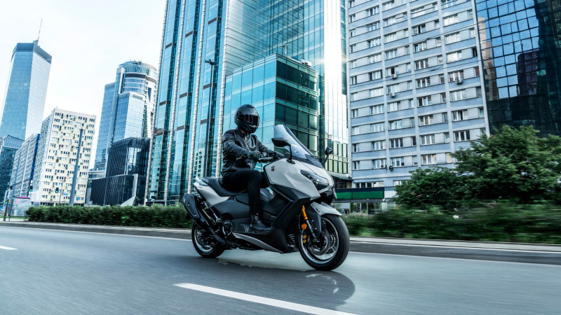
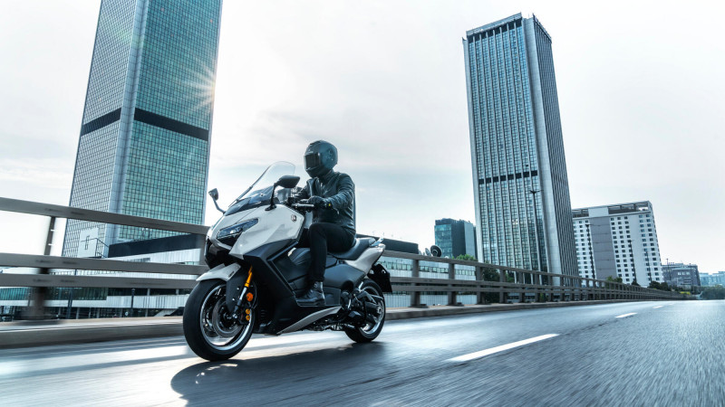
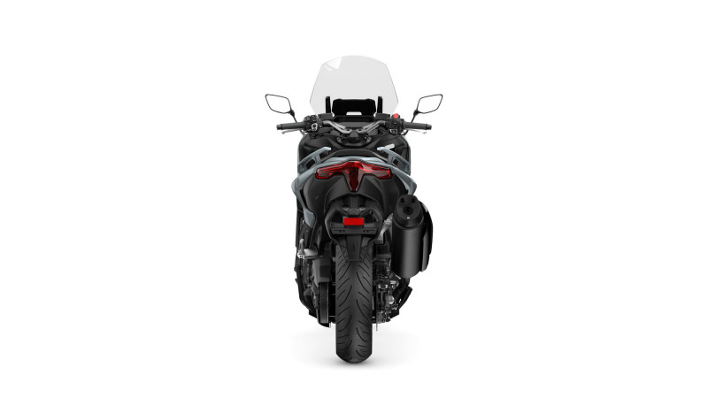
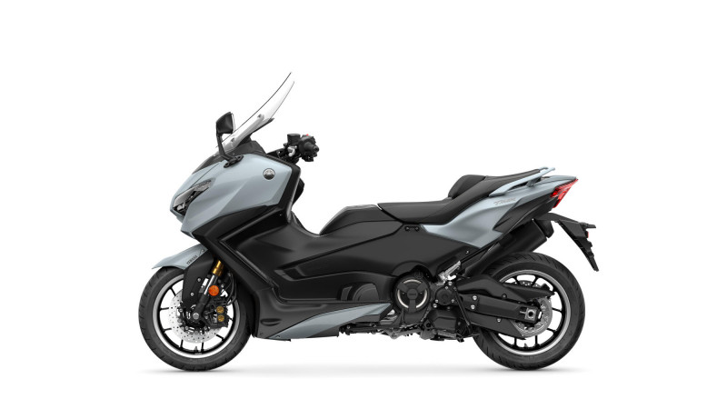
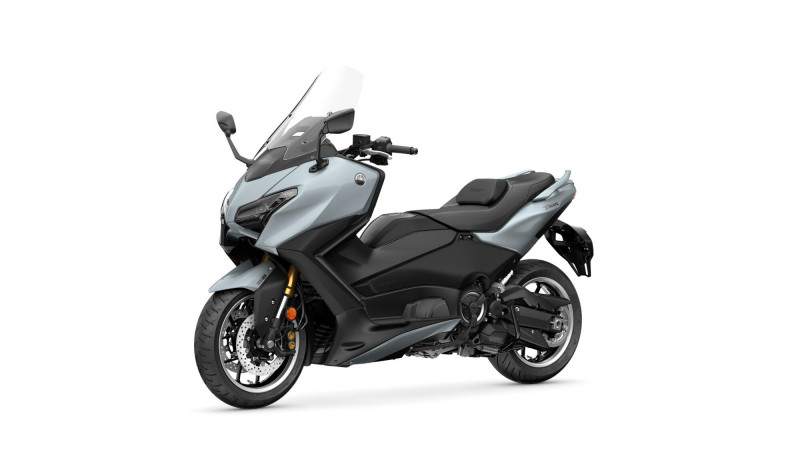
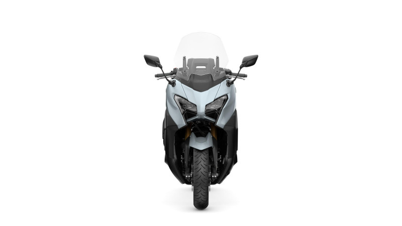
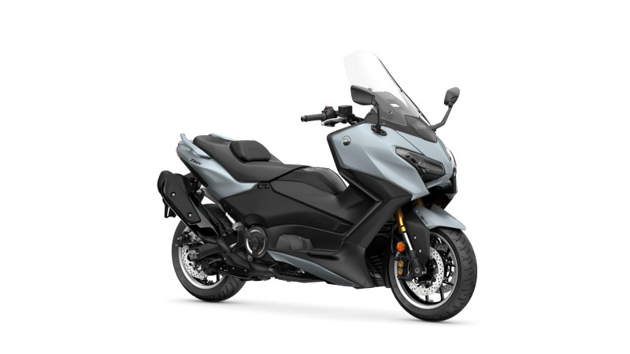

Maxi-scooter sport · 560 cm³ · 2025
Le maxi-scooter le plus rapide et le plus raffiné de Yamaha. Des sensations de moto, le confort d'un scooter, la technologie en plus.
Une légende, perfectionnée
Depuis sa naissance, le TMAX a redéfini ce qu'un deux-roues pouvait offrir. La version 2025 va plus loin : un avant plus tranchant, des aides à la conduite enrichies et un tableau de bord encore plus sophistiqué. « MAX is in the details » — chaque ligne, chaque réglage, chaque commande a été pensé pour ceux qui ne veulent faire aucun compromis. Sur la Croisette comme sur les routes de l'Estérel, il impose sa présence.
Ce qu'en dit la presse
— Le Repaire des Motards
Châssis moto
Le TMAX est bâti autour d'un châssis double longeron en aluminium, hérité de l'univers moto. Résultat : une stabilité et une précision de trajectoire qui défient les lois du segment. Fourche télescopique, double disque avant Ø 267 mm, pneus 15 pouces — il avale les courbes avec un aplomb désarmant. En ville, il se faufile ; sur autoroute, il file ; sur une route sinueuse, il vous fait sourire.

Connectivité
Un large écran couleur haute résolution centralise tout : navigation Garmin pleine carte, appels, musique, statistiques de conduite via l'application MyRide et le système My TMAX Connect (géolocalisation, alertes, suivi du véhicule). Gardez les yeux sur la route, le contrôle au bout des doigts. La technologie ne se voit pas — elle se ressent.

Confort premium
Selle et poignées chauffantes, pare-brise électrique réglable au guidon, régulateur de vitesse, démarrage sans clé Smart Key, éclairage full LED, rangement sous-selle généreux. Le TMAX Tech Max ne se contente pas de vous emmener : il prend soin de vous. Hiver comme été, chaque trajet devient un plaisir.

En bref
Au-delà de la fiche technique, ce sont ces détails qui transforment chaque trajet.
La référence du segment
— Caradisiac
Galerie



Ils l'ont essayé
Revue de presse
« Véritable phénomène de mode… la France est son trône, le TMAX y annexant 35 % des ventes du segment. »
Lire l'essai Le Repaire des Motards« Une machine débordante de qualité, convaincante. »
Lire l'essai Moto Magazine« Yamaha TMAX : un règne qui dure » — stabilité, freinage et comportement moto-like salués.
Lire l'article Le FigaroPour les puristes
Passez à l'action
Essayez le TMAX Tech Max à Cannes. Sans engagement, réponse sous 24h.